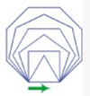

Drawing with Turtles
Import module
- computer graphic module
import turtle
Create a canvas
p = turtle.Pen()
Move the turtle 50 pixels
- pixel: the smallest unit on the screen
p.forward(50)
Turn left 90 degrees
- the direction you're facing is 0 degree
- p.left(90) == p.right(270)
p.left(90)
Draw a square
- manual
p.forward(100) p.left(90) p.forward(100) p.left(90) p.forward(100) p.left(90) p.forward(100) p.left(90) - using loop
for i in range(4): p.forward(100) p.left(90)
Reset
- reset: clear the canvas and puts the turtle back at its startig position
- clear: clear the canvas
t.reset()
Other commands
- p.backward(100)
- move pen backward 100 pixels
- p.up()
- lift the pen off the page
- p.down()
- start Drawing
draw two parellel lines
t.reset()
t.backward(100)
t.up()
t.right(90)
t.forward(20)
t.left(90)
t.down()
t.forward(100)
Rotated shape
import turtle
x = 3
pen = turtle.Pen()
for j in range(x):
for i in range(4):
pen.forward(100)
pen.left(90)
pen.left(360/x)
turtle.done()
Exercise 1
Create a program to draw a equilateral triangle.
Exercise 2
Create a program to draw the following shape.
Exerciase 3
Create a program to draw the following shape.
Exerciase 4
Create a program to draw the following shape.

Exerciase 5
Create a program to draw the following shape.

Exerciase 6
Create a program to draw the following shape.
Exercise 7
Create a program to draw Pentagon(5 sides).
Exercise 8
Create a program to draw Hexagon(6 sides).
Exercise 9
Create a program to draw Heptagon.(7 sides)
Exercise 10
Create a program to draw the following shape.

Homework 1
Create a program to draw the following shape.

Homework 2
Create a program to draw the following shape.

Homework 3
Create a program to draw the following shape.

Homework 4
Create a program to draw the following shape.